03 基本語法 — Verilog 的型別、運算子與八種 Block
資料型別、運算子、模組與實體、四種模型、八種 block、阻塞與非阻塞。原始投影片 38 張，估計閱讀 55 分鐘。
學習目標
- 寫出 Verilog 的常數格式（
8’haf、1’bz），並說明`與’兩種引號的用途差別。 - 分辨可合成與不可合成的運算子與敘述。
- 說明模組 (module) 與實體 (instance) 的關係，並寫出埠對應的兩種寫法與參數傳遞。
- 認出 Verilog 的四種模型：行為、RTL、閘級、開關級，並讀懂各自的範例程式。
- 說出 Verilog 的八種 block 各自的性質（並行／序列／程序式）。
- 準確區分連續指定、阻塞指定與非阻塞指定在模擬與合成上的差別。
- 讀懂
case／casex／casez的差異，並寫出正反器與計數器的標準寫法。
3.1 簡化的 VLSI 設計流程
投影片 p.1–2
本章封面日期 2022/09/29，是 Lec. 03「Type, Op, 4Mdl, 8Blks」。
p.2 把整個 VLSI 流程畫成一條流水線：idea（燈泡）→ 寫 RTL 程式 → Rapid Prototyping（FPGA）→ OK? → Prototyping Chip → 晶圓／晶粒 → OK? → 量產。兩個 OK 菱形各有一條 Y 的出口，不 OK 時則有黃色回饋箭頭繞回 idea 與撰寫階段。
module cpu(ports)
inout ports;
:
// RTL Coding
:
endmodule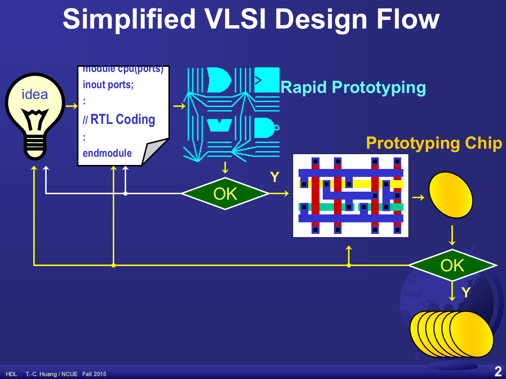
這張圖解釋了為什麼要先學 FPGA：在 Rapid Prototyping 階段改錯只要重新燒錄，到了 Prototyping Chip 之後每次修正都是一次光罩與流片的成本。
3.2 本章大綱
投影片 p.3
- Data Types and Operators in Verilog（資料型別與運算子）
- Organic Elements in Structure View（結構觀點的組成元素）
- Module/Instance
- Ports/Nets Mapping
- Four Models of HDL（HDL 的四種模型）
- Switch/Gate/RTL/Behavioral
- Two Usual Phases of HDLs（HDL 的兩個主要階段）
- Simulation: Event Driven（模擬：事件驅動）
- Synthesis: Continuous/Procedural（合成：連續／程序式）
3.3 Verilog 的特殊符號
投影片 p.4
投影片用一張鍵盤照片，標出 Verilog 會用到的五個特殊符號：
| 符號 | 投影片的說明 | 用途 |
|---|---|---|
` | Left single quote（左單引號／反引號） | 編譯指令，如 `define、`include |
@ | at sign | 敏感度列表，如 always@(...) |
# | number sign | 延遲與參數，如 #10、#(8) |
$ | dollar sign | 系統函式，如 $display、$time |
' | right single quote（右單引號） | 有位寬的常數，如 8'hAF |
投影片刻意區分反引號 `（編譯指令）與單引號 '（常數位寬），兩者在鍵盤上是不同的鍵，初學時最常打錯。
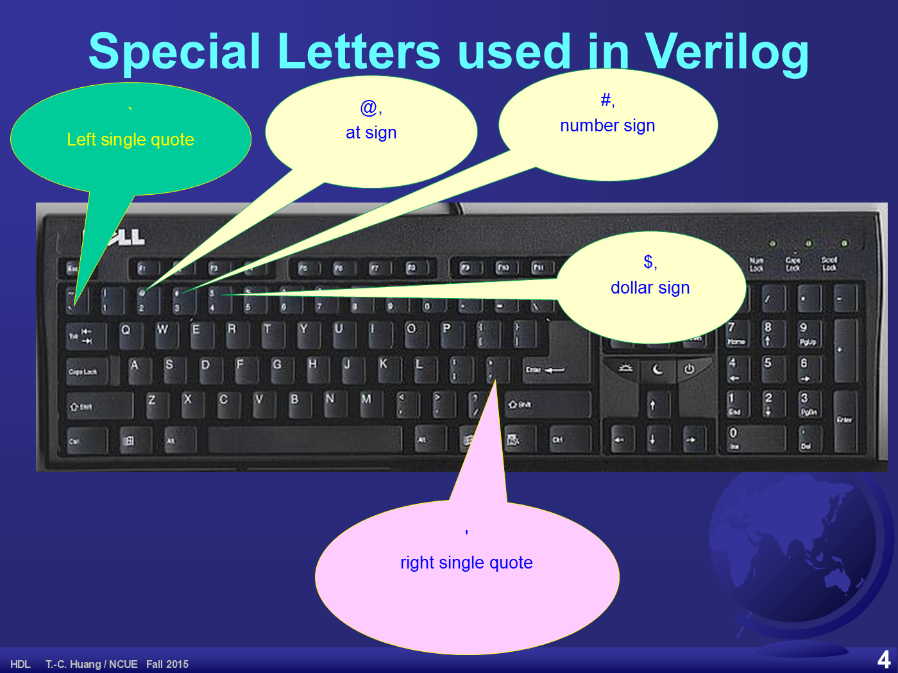
3.4 資料型別與常數
投影片 p.5
Switch-Level：訊號強度
| Input | Output |
|---|---|
| supply | pull |
| strong | pull |
| pull | weak |
| weak | medium |
| large | medium |
| medium | small |
| small | small |
| high | high |
Logic-Level：四種邏輯值
1’b01’b11’bz (floating, high impedance),1’bx (unknown)
Constants：常數寫法
| 寫法 | 投影片的說明 |
|---|---|
8’b01011100 | 8-bit Binary |
8’o377 | 8-bit Octal |
8’d255 | 8-bit Decimal |
8’haf | 8-bit Hexadecimal |
‘ha0b9 | unsized hex |
255 | unsized decimal |
投影片左下角把 13’ h1A2F 放大，用大括號標出兩個部分：13 是 #bits（位寬），h 是 radix（基底）。
格式是「位寬 + 單引號 + 基底字母 + 數值」。省略位寬時由上下文決定寬度（unsized）。z 代表高阻抗、x 代表未知，這兩個值在模擬中很常見，但合成後的實體電路只有 0 與 1。
3.5 運算子
投影片 p.6–7
與 C 語言類似（p.6）
Unary: assign a = ~b; // bitwise not
Binary: assign a = b & c; // bitwise and
such as: +, -, *, /, |, ^, <<, >>,
Ternary: assign d = c ? a : b; // if 1, d=a; else d=b可合成的運算子
- Most ALU and logic operation designs are developed in library.（大部分 ALU 與邏輯運算的設計都已在程式庫中。）
- In RTL model, the designs are “assigned” according to data flow.（在 RTL 模型中，設計是依資料流「指定」出來的。）
不可合成的敘述與運算子
- Statements dependent to time or times, e.g., initial, repeat（依賴時間或次數的敘述）
- Switch-level（開關級）
- Operators used in compiling/simulation only, e.g.,
=== - Operators with no design/method in current library, e.g.,
/ %(in some tool)
完整運算子表（p.7）
| Type | Symbol | Operation |
|---|---|---|
| Arithmetic | * | Multiply |
/ | Divide | |
+ | Add | |
- | Subtract | |
% | Modulus | |
+ | Unary plus | |
- | Unary minus | |
| Logical | ! | Logical negation |
&& | Logical and | |
|| | Logical or | |
| Relational | > | Greater than |
< | Less than | |
>= | Greater than or equal | |
<= | Less than or equal | |
| Equality | == | Equality |
!= | inequality | |
| Reduction | & | Bitwise negation |
~& | nand | |
| | or | |
~| | nor | |
^ | xor | |
^~ ~^ | xnor | |
| Shift | >> | Right shift |
<< | Left shift | |
| Concatenation | { } | Concatenation |
| Conditional | ?: | conditional |
Reduction 群組的第一列，投影片確實寫成 & → 「Bitwise negation」。依該群組的其餘各列推斷，這一列應該是 and（縮減 AND）。此處照原文保留。
3.6 模組與實體
投影片 p.8
投影片的兩句關鍵定義（照錄）：
- A module is an object that is defined as a template.（模組是以樣板形式定義的物件。）
- Instances are duplicated elements in the parent module of its associated module.（實體是在父模組中被複製出來的元素，對應到某個模組。）
module MODULE1( … );
:
:
endmodule
module MODULE2( … );
:
:
endmodule
module MODULE3( … );
:
:
endmodule module top( … );
:
:
MODULE1 Instance1(…);
MODULE1 Instance2(…);
MODULE2 Instance3(…);
MODULE1 Instance4(…);
MODULE2 Instance5(…);
:
:
endmodule注意右側：MODULE1 被實體化三次（Instance1、2、4），MODULE2 兩次，而 MODULE3 完全沒用到。模組是定義，實體才佔用硬體資源。
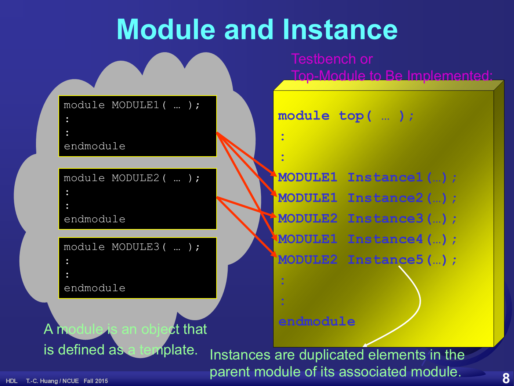
3.7 埠與接線的對應、參數傳遞
投影片 p.9–10
埠是內部觀點，接線是外部觀點（p.9）
投影片用兩個欄位標題說明：Port (Pin) – Internal View（埠／接腳，模組內部看）與 Net (Wire) – External View（網線，模組外部看）。圖上 Instance1 of M1 的三條線標為 Wire1、Node2、Net3，並附註 They may have the same or different names.（名稱可以相同也可以不同。）
module M1(Clk, A, B);
input Clk;
inout A;
output B;
:
:
endmodule 埠對應有兩種寫法：
Port-Associated Mapping:
e.g., M1 Instance1(.A(Node2), .Clk(Wire1), .B(Net3));
Ordered Mapping:
e.g., M1 Instance2(Wire1, Node2, Net3);名稱對應 (.A(Node2)) 不怕順序寫錯，埠一多就該用它；順序對應 (M1 Instance2(...)) 比較短，但必須和宣告順序完全一致，改埠順序就會錯得無聲無息。
參數埠的宣告與實體化：
Declaration:
e.g., module M1 #(parameter N=16)(Port1, Port2);
Instantiation:
e.g., M1 #(8) Instance1 (Net1, Net2);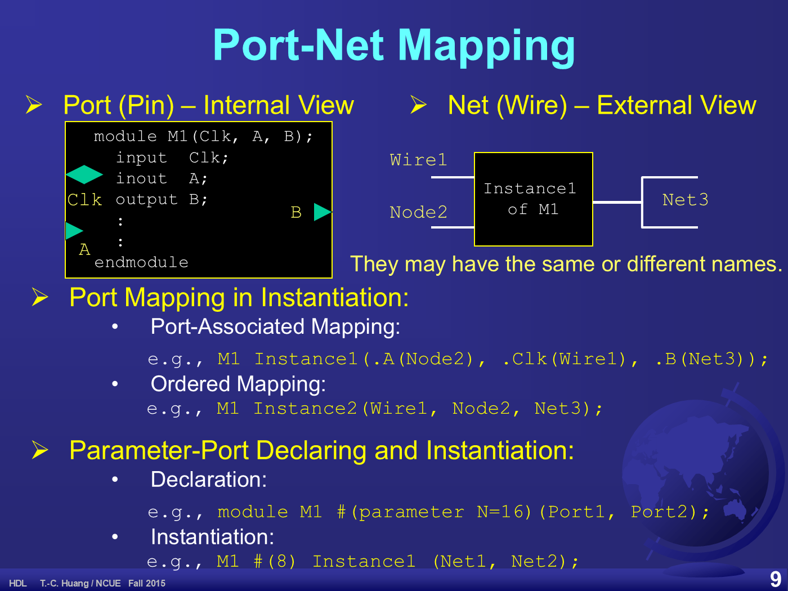
參數傳遞的四種寫法（p.10）
ADD #(4, 8) U1 (X, Y, Sum);ADD #(.M(4), .N(8)) U1(.A(X), .B(Y), .S(Sum));module ADD(A, B, S);
parameter M=2, N=3;
input [M-1:0] A;
input [N-1:0] B;
:
endmodulemodule ADD #(
parameter M=2,
parameter N=3) (
input [M-1:0] A,
input [N-1:0] B,
output [N:0] S);
:
endmodule投影片對預設值的註記照錄：default values should / cannot given for some compilers.（某些編譯器要求／不允許給預設值。）
3.8 數位 IC 設計自動化的四個層次
投影片 p.11
| 層次 | 方法 |
|---|---|
| Switch Level Syntheses | Physical Design Automation for Various Logic Structures. Primitive Logic Gates: Eular-Path Guided CMOS Layout |
| Gate Level Syntheses | K-Map → McKlusky & Quintus Method: 2-Level Optimized Breyton’s ESSPRESSO: Multiple-Level Efficient |
| RTL Model Syntheses | Data-Flow Graph Theory Macro Instancing from Library (Database and Rule-base) |
| Behavioral Model Syntheses | Finite State Machine (FSM) Algorithmic State Machine (ASM) (Mapped from Flowchart) Rule-Base or Artificial Intellectual Techniques |
原文的拼法 Eular-Path、McKlusky & Quintus、Breyton’s ESSPRESSO 均有誤，一般寫作 Euler path、Quine–McCluskey、Brayton's ESPRESSO。照原文保留。
這張表正好對應第 04、05 章：行為模型的合成靠 FSM 與 ASM，而 ASM 是由流程圖對應過來的 — 這就是第 04 章整章要做的事。
3.9 Verilog 的四種模型
投影片 p.12
投影片由上而下分成四個橫帶，抽象層級由高到低：行為 → RTL → 閘級 → 開關級。四段程式都是同一件事的不同層級寫法。
1. 行為模型（Behavioral Model / Procedural Model）
module counter(Clk, Q);
input Clk;
output [15:0] Q;
reg [15:0] Q;
always@(posedge Clk)
Q=Q+1;
endmodule 圖示為一個運算子梯形接到帶時脈記號的暫存器，輸出再回授到自己的輸入。
2. 暫存器轉移層（Register Transfer Level / Data-Flow / Register-Transfer Model）
module adder(A, B, Ci, Co, S);
input [31:0] A, B;
input Ci;
output Co;
output [31:0] S;
assign {Co, S}=A+B+Ci;
endmodule 圖示為兩條暫存器橫條餵進一個標著 operator 的梯形，輸出再寫入下方第三條暫存器橫條 — 這正是「暫存器之間的資料轉移」。
3. 閘級模型（Gate Level Model / Structural Model）
module SR_latch(S, R, P, Q);
input S, R;
output P, Q;
nor g1(Q, R, P);
nor g2(P, S, Q);
endmodule 圖示為兩個交叉耦合的 NOR 閘。注意這裡用的是閘級原始元件 nor，並給了實體名 g1、g2。
4. 開關級模型（Switch Level Model）
module multiplexer(A, B, C, F);
input A, B, C;
output F;
tranif1 (F, A, C);
pmos (F,B,C);
endmodule 圖示為一個 MOS 電晶體符號與一個傳輸閘（蝴蝶結）符號。
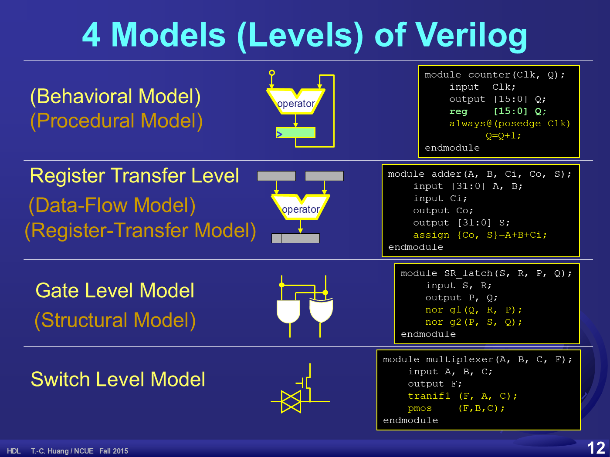
實務上只有第 1、2 種常用（對應第 01 章 p.16 的 Behavioral Mode 與 RTL Mode）。閘級通常是合成工具的輸出而不是人寫的輸入；開關級幾乎只在元件庫開發或特殊電路才會碰到。
3.10 閘級設計範例與突波消除
投影片 p.13
範例 1：正緣偵測器
module posedge_detector(in, out);
input in;
Output out;
not #5 (c, b), (b, a), (a, in);
nand #10 (out, in, a);
endmodule 原文 Output out; 的 O 是大寫，Verilog 區分大小寫，此處照抄不修正。
電路是三個反相器串成鏈 (in → a → b → c)，再把原輸入 in 與延遲後的 a 一起送進 NAND。#5 與 #10 是閘延遲。
範例 2：突波 (Hazard / Glitch) 消除
| AB \ C | 0 | 1 |
|---|---|---|
| 00 | 0 | 1 |
| 01 | 0 | 1 |
| 11 | 1 | 1 |
| 10 | 0 | 0 |
投影片把 C=1 欄中 AB=01 與 AB=11 兩格圈紅 — 這是會產生突波的相鄰處。右側的時序圖顯示 A 上升時 F 出現一個窄脈衝。
修正方式是加入共識項 (consensus term)。投影片用動畫把第一行換成第二行：
assign F=(A&B)|(~A&C);assign F=(A&B)|(~A&C)|B&C;為什麼有效：當 B=C=1 時，不論 A 怎麼跳，B&C 這一項恆為 1，F 就被固定住，中間的空檔被填滿。這個多餘項在邏輯上完全不改變真值表，純粹是為了消除時序上的毛刺。
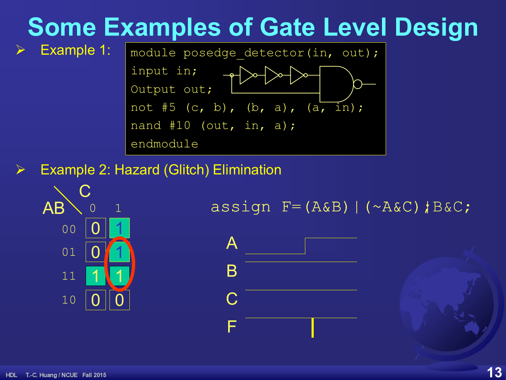
3.11 RTL 由程式庫合成
投影片 p.14–15
基本合成方法（p.14）
投影片列出三步：
- To parse an arithmetic-logic expression into a tree（把算術邏輯式剖析成一棵樹）
- Matching parameters and checking the port-net consistencies（比對參數並檢查埠與網線的一致性）
- Calling the instance from macro-block libraries and connecting.（從巨集區塊程式庫叫出實體並接線。）
範例式子是 E.g., assign A=B + ~C;，圖中畫出它的剖析樹：根是 =，子節點為 A 與 +；+ 的子節點是 B 與 ~；~ 的子節點是 C。
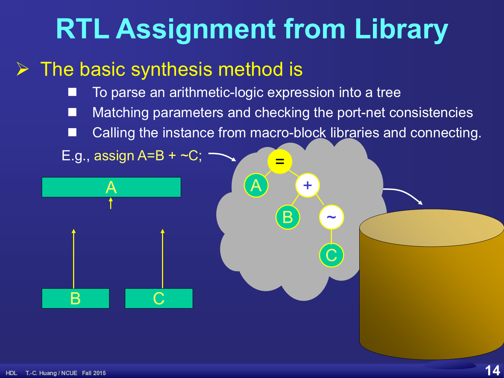
三個 RTL 設計範例（p.15）
module comparator(A, B, GT, EQ, LT);
parameter SIZE=16;
input [SIZE-1:0] A, B;
output GT, EQ, LT;
assign GT=(A>B);
assign EQ=(A==B);
assign LT=(A<B);
endmodule module decode3to8(in, out);
parameter SIZE=3;
input [SIZE-1:0] in;
output [1<<SIZE-1] out;
assign out=1’b1<<in;
endmodule module multiplexer(F, C, A, B);
input A, B, C;
output F;
assign F=C?A:B;
endmodule 三個範例都只用 assign，沒有任何 always — 這就是 RTL／資料流風格：描述「輸出等於輸入的什麼函數」，由合成器去挑程式庫裡的巨集區塊。
3.12 匯流排的切割與串接
投影片 p.16
圖上兩條 4 位元匯流排 A[3:0] 與 B[3:0] 由上方進入，合成 8 位元的 C[7:0]，再從下方切成 D[1:0] 與 E[5:0]。
assign A=C[7:4];
assign B=C[3:0];
assign D=C[7:6];
assign E=C[5:0];assign C={A,B};
assign {D, E}=C;重複 (replication) 的例子：
assign data = 2{4'b0001, 2{3‘b011}};投影片下方用兩條綠色橫條展開結果：
0001-001-001-0001-001-001
00010010010001001001這一頁有三處原文瑕疵，全部照原樣呈現：(1) 4'b0001 用直引號，3‘b011 卻用全形左引號；(2) 重複語法寫成 2{...}，合法的 Verilog 應為 {2{...}}；(3) 兩條展開字串長度互相矛盾（24 位 vs 20 位）。
正確寫法是 assign data = {2{4'b0001, {2{3'b011}}}};，展開後為 0001 011 011 0001 011 011 共 20 位元。投影片的 001 與位數都和 3'b011 不符，推測是手寫示意時的筆誤。
3.13 什麼是「行為」
投影片 p.17
這一頁只有一張卡通圖與兩個標籤：一個綠色小人舉著手，一道黃色閃電打在他的右手上標著 Event!，左上角一顆太陽照過來標著 Another Event!。
教學重點：「行為」就是對事件的反應。電路平時什麼都不做，事件（時脈邊緣、訊號變化）一來才反應 — 這正是 always@(事件) 的語意。
3.14 內容順序與時序、可合成的範圍
投影片 p.18–20
哪些東西有順序、哪些沒有（p.18）
圖的橫軸是 time（原點標 0），縱軸是 context。左側綠色欄位列出「連續、無順序」的那一類：
Continuous
Basis
Non-ordered
Switch Model
Gate Model
RTL Model右側沿著時間軸排了六條橫帶，由上而下依序是：
| # | 帶上的文字 | 底色 |
|---|---|---|
| 1 | always block / Procedural ・ RTL / Behavioral | 淺綠 |
| 2 | initial block / Simulation only | 黃 |
| 3 | Compiler/system blocks ・ task/function/specify … | 粉紅 |
| 4 | initial block / Simulation only | 黃 |
| 5 | always block / Procedural ・ RTL / Behavioral | 淺綠 |
| 6 | initial block / Simulation only | 黃 |
頁尾的結論一句話：Synthesizable: Continuous and Procedural Blocks（可合成的只有連續敘述與程序式區塊）。
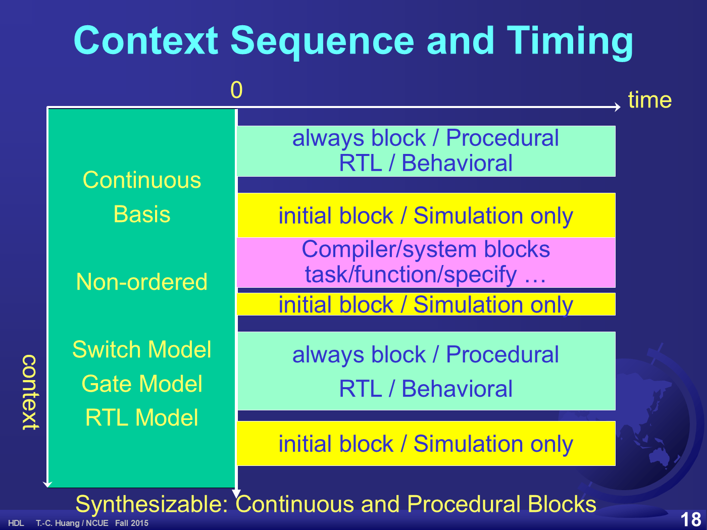
答案版（p.19）
同樣的版面，但只留下兩條淺綠色的 always block / Procedural ・ RTL / Behavioral 帶，其餘都移除。底部兩個標註：左欄下方寫 Combinational（組合），橫帶下方寫 Sequential（循序）。
這就是最精簡的答案：連續敘述 → 組合邏輯；always 程序式區塊 → 循序邏輯。兩者都可合成，initial 與系統函式不可。
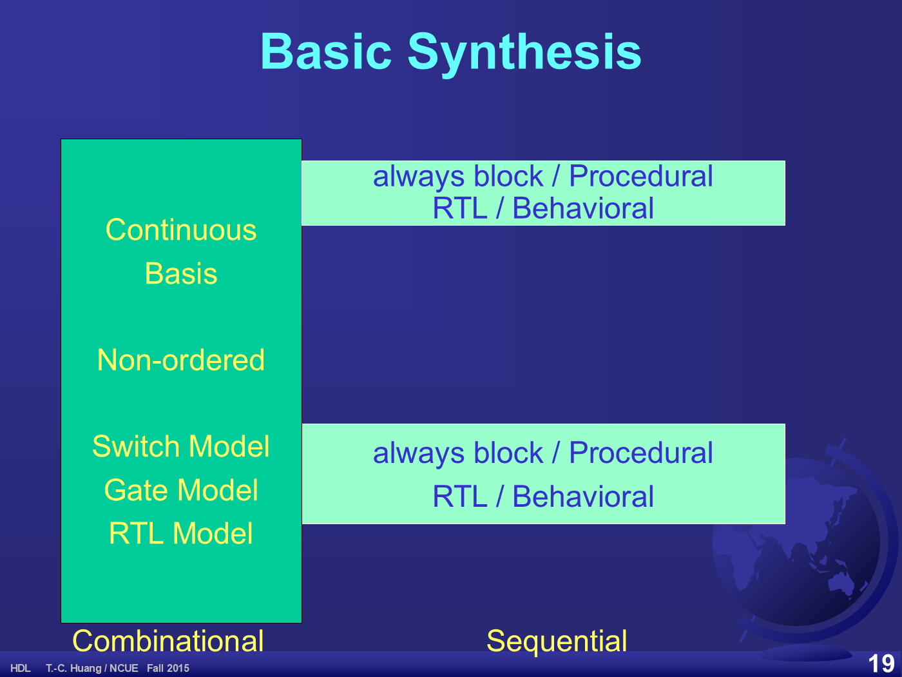
資料路徑的畫法（p.20）
一朵大綠雲代表組合邏輯，輸入 X 從左邊進來，輸出 Z 往右出去；雲下方是一疊帶時脈三角形的暫存器，存放 Q，輸入是 D。Q 回授進雲，D 由雲驅動，而 event 這條線接到暫存器的時脈輸入。
投影片右下角的註記照錄：Procedural behaviors / always@(event) Q←D;
3.15 Verilog 的事件
投影片 p.21
圖的上方是兩條波形 Inputs 與 Inout。Inputs 上的邊緣標為 Driving Events（驅動事件，紅色），Inout 上對應的邊緣標為 Driven Events（被驅動事件），兩者之間用虛線箭頭表示因果。
| 分類 | 寫法 |
|---|---|
| Primitive Event of a Signal 單一訊號的基本事件 | Positive edge: posedge variable |
Negative edge: negedge variable | |
Changing to another state (such as 1’bz) | |
| Compound Events 複合事件 | Any event of a signal: variable |
Using or | |
Example: always@(posedge Clk or negedge In) |
投影片用一個黃色大括號框住 (posedge Clk or negedge In)，標上 Sensitivity List（敏感度列表）。
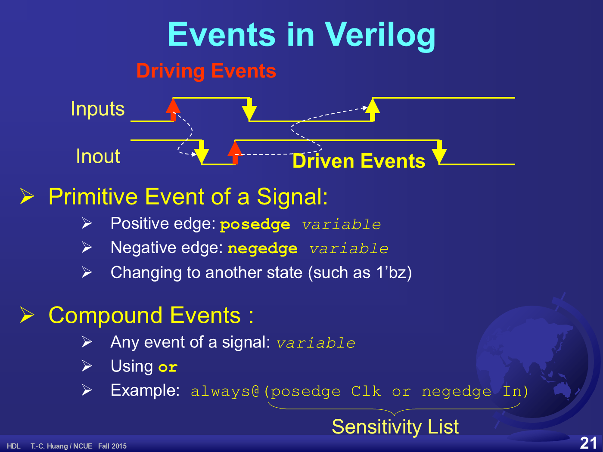
3.16 電路時間與 CPU 時間、時間輪
投影片 p.22–23
兩種時間（p.22）
圖的中段是一支標著 Simulated Circuit Time（模擬的電路時間）的白色箭頭，下方是一排六個標著 Simulation CPU Time（模擬所花的 CPU 時間）的綠色箭頭。虛線把每個訊號邊緣對應到一個 CPU 時間格 — 說明兩種時間各自獨立前進。
- Circuit Time >> CPU Time for Small Low-Speed Design（小型低速設計：電路時間遠大於 CPU 時間）
- CPU Time >> Circuit Time for Large High-Speed Design（大型高速設計：CPU 時間遠大於電路時間）
換句話說：模擬一顆小晶片跑 1 秒的行為，電腦可能只花幾毫秒；但模擬一顆大型高速晶片跑 1 微秒，電腦可能要算好幾個小時。這是驗證工程的核心成本。
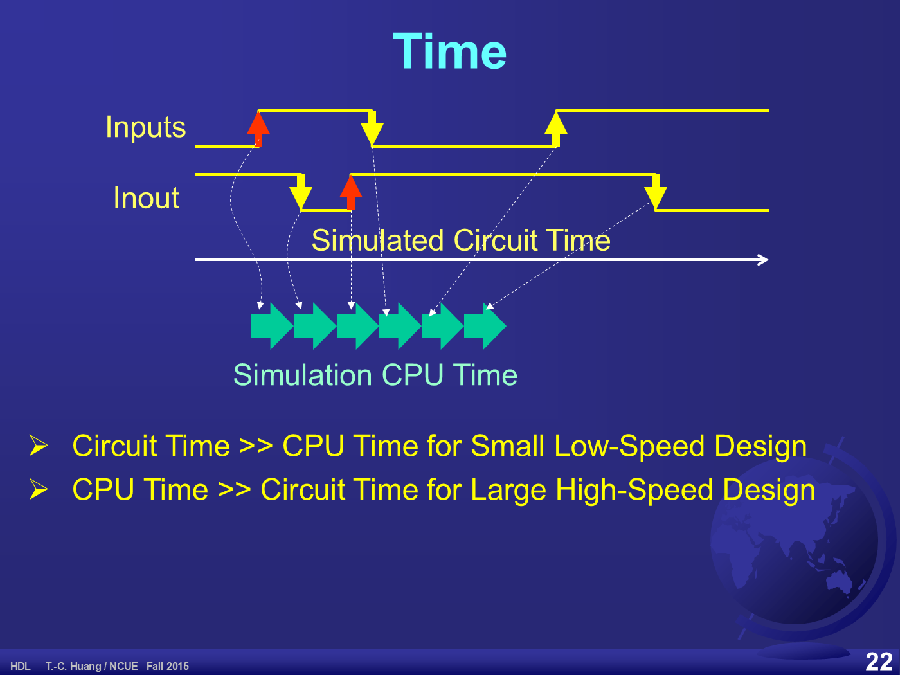
時間輪（p.23）
投影片的一句定義：Internal Queue Structure for Event-Driven Simulation （事件驅動模擬的內部佇列結構）。
圖是一個大的綠色圓形箭頭（輪子），輪緣上用黃線與藍色別針掛著十個白色行李標籤，每個標籤都寫著同樣的三行字：
Event
Circuit time
Cause & Effect事件驅動模擬器的運作方式：每個待處理事件都帶著「發生時間」與「因果關係」掛在時間輪上，模擬器按電路時間順序一個一個取下來處理，處理時又可能產生新的事件掛回輪子。這就是為什麼模擬時間不是等速前進 — 沒有事件的時段會被直接跳過。
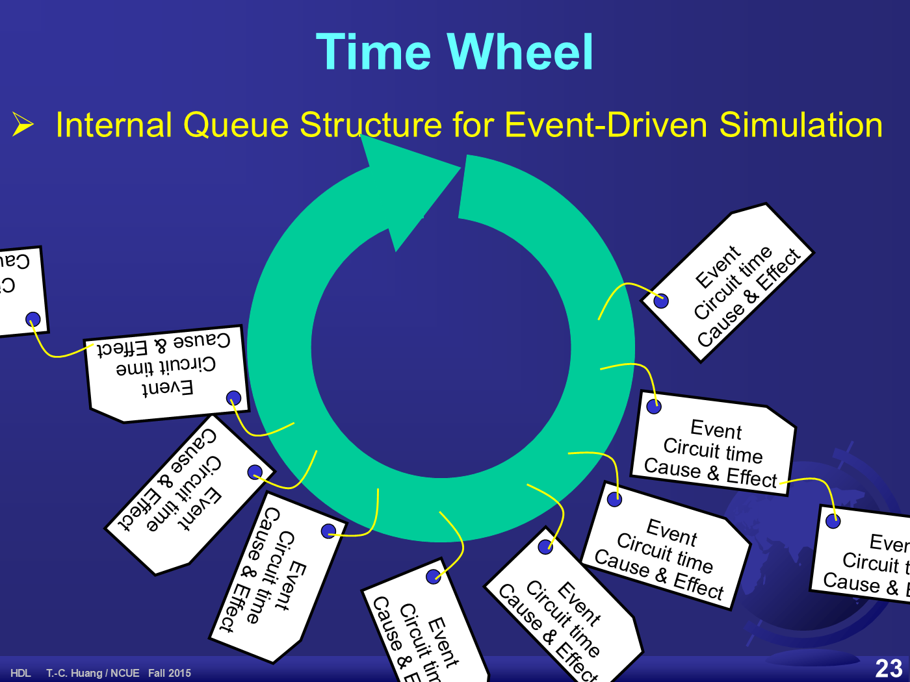
3.17 左值與 reg
投影片 p.24
- Left Value（左值）：The variable left to the assignment of an expression in C or Verilog（在 C 或 Verilog 中，位於指定運算左邊的變數）。
- Register（暫存器）：
- Register circuit usually denotes the flipflop array, such as counters.（暫存器電路通常指正反器陣列，例如計數器。）
- reg in behavioral mode may not necessarily be a register（行為模式中的
reg未必真的是暫存器。） - reg keeps the variable data while elapsing in simulation phase（
reg在模擬過程中保存變數的值。） - Declare reg for all left values in behavioral model blocks.（行為模型區塊中所有的左值都要宣告為
reg。） - reg can also define memory arrays during simulation phase.（
reg也可以在模擬階段定義記憶體陣列。）
module M1(in, out);
:
Output [7:0] out;
reg [7:0] out; // behavioral Lvalue
reg [7:0] Memory[1023:0]; //1KB
always@(Events) begin
:
out = right_expression;
:
end
endmodule 原文 Output 的 O 是大寫。照抄不修正。
這是初學者最大的誤解來源：reg 不等於硬體暫存器。它只是「可以在程序式區塊裡被指定的變數型別」。真正會不會合成出正反器，取決於你怎麼寫 — 用 always@(posedge Clk) 才會，用 always@(a or b) 寫組合邏輯就不會。
3.18 Verilog 的八種 Block
投影片 p.25
| Block | Outlook | Property | for-loop | index |
|---|---|---|---|---|
| statements | begin [:name] / end | grouping | ||
| module | module #(para) ID (ports); / endmodule | parallel | ||
| always | always@(events) / statements; | procedural | concurrent | integer |
| initial | initial statements; | serial | sequential | Integer |
| task | task ID; / endtask | procedural | sequential | integer |
| function | function ID; / endfunction | procedural | sequential | sequential |
| generate | generate / endgenerate | by time 0 | genvar | |
| specify | specify / endspecify |
兩處原文瑕疵：initial 列的 index 寫成大寫的 Integer；function 列的 index 欄寫成 sequential（依其他列的規律應為 integer）。照原文保留。
第 01 章 p.41 從「詞性」的角度列了 13 種 block 用法，這裡則從「性質」整理成 8 種並加上 for-loop 與索引變數型別 — 兩張表互補，建議對照著看。
3.19 編譯指令與系統函式
投影片 p.26–27
投影片標題兩行：Directives in Verilog / `back-quote and $dollar-sign Directives。
| 分類 | 內容 |
|---|---|
| Preprocessor 前置處理器 | Macro Substitutions: `define sym stringInclude Construct: `include fileConditional Process: `ifdef sym <Code> `endif |
| Simulation Directives （Ignored by HDL Compiler） | `timescale unit / precision`resetall |
| System Functions （Prefixed by $） | $display, $write: write a message to the display$monitor: monitoring every event$time: return the circuit simulation time$stop, $continue$finish |
綜合範例（p.27）
`include ”parts.v”
`timescale 1ns/1ps
`define high 7:4
`define Sum {C, S}
module xyz(input, output);
:
parameter five = 4’b0101;
:
Assign `Sum = Bus[`high] + five;
:
Endmodule
module testbench;
initial begin
:
$monitor($time, ”Sum=%b, Adr=%H”, Sum, A);
:
#10 $stop;
end
endmodule這段有多處原文瑕疵：字串用的是全形雙引號 ”；Assign 與 Endmodule 首字母大寫；模組埠直接取名為 input、output（與關鍵字衝突）。全部照抄不修正。
`define Sum {C, S} 這種把串接寫進巨集的做法很常見：之後寫 `Sum = ... 就等於同時指定 C 與 S，也就是進位與和一次寫入。
3.20 命令列與監看輸出
投影片 p.28
這一頁把「設計 + 測試平台 + 模擬輸出」三者放在一起對照，是本章最完整的一個範例。
設計本體
module cnt(Clk, Rst, Q);
input Clk, Rst;
output [31:0] Q;
reg [31:0] Q;
always@(posedge Clk or posedge Rst)
if(Rst) Q=0;
else Q=Q+1;
endmodule測試平台
module test;
reg Clk, Rst;
wire [31:0] Q;
cnt u1(Clk, Rst, Q);
always Clk = #10 ~Clk;
initial begin
Clk=0;
$display("------------Time---- Clk-------Q-");
$monitor("%5d %b %h", $time, Clk, Q);
Rst=1;
#15 Rst=0;
#320 $stop;
end
endmodule模擬輸出
------------Time---- Clk-------Q-
0 0 00000000
10 1 00000000
20 0 00000000
30 1 00000001
:
320 0 0000000f
330: 1 00000010
Stop at simulation time 335000輸出的最後兩行在投影片中是手動編輯的：330: 那一行用 Tab 縮排而非空白對齊，且多了一個冒號。照原樣保留。
讀法：時脈每 10 個時間單位翻轉一次，所以 Q 每 20 單位加一（只在正緣累加）。Rst 在 t=15 放掉，因此 t=30 的正緣開始計數。t=320 時 Q 為 0000000f（十進位 15），再一個正緣就變成 00000010（十六進位 16）。
3.21 三種指定敘述
投影片 p.29
這是全章最關鍵的一頁。Verilog 有三種指定，語意完全不同。
| 種類 | 模擬時 (Simulation) | 合成時 (Synthesis) |
|---|---|---|
| Continuous Assignments 連續指定 =（用於 assign） |
Evaluate RHS and change Lvalue at 1 step when any event occurs. （任何事件發生時，一步內算完右式並改變左值。） |
Draw a wire from the RHS to the Lvalue. （從右式拉一條線到左值。） |
| Blocking Assignments 阻塞指定 =（用於程序式區塊） |
“Blocking” means to be locked at the dependency. Evaluate RHS and change Lvalue at 1 step when any event occurs. （「阻塞」是指被相依性鎖住；事件發生時一步內算完並改變左值。） |
Cannot be synthesized if any data dependency. （只要有資料相依性就無法合成。） |
| Non-blocking Assignments 非阻塞指定 <= |
Evaluate RHS at the first phase then change Lvalue at the second phase. （第一階段先算右式，第二階段才改變左值。） |
Cannot be synthesized if any data dependency; There won’t be dependency if all are non-blocking. （有相依性則無法合成；但若全部都用非阻塞，就不會有相依性。） |
最後那句是整頁的結論：只要同一個 always 區塊裡全部使用非阻塞指定 <=，就不會產生資料相依性問題，因此可以合成。這也是「循序邏輯一律用 <=、組合邏輯一律用 =」這條業界慣例的由來。
3.22 函式與任務
投影片 p.30–31
投影片把 function／task 類比為其他語言的既有概念：The same as function/procedure in PASCAL，以及 C 的 non-void／void 函式。
優點 (Advantage)：
- Fast, convenient and easy to maintain the source code.（快速、方便、好維護。）
- Convenient for reading.（易讀。）
- Repetition and duplication（可重複使用。）
module xyz(Clk, X, Y);
:
always(posedge Clk)
begin
:
X <= Reverse(Y);
:
end
:
endmodule
function [7:0] Reverse(In); // functionname is a reg
input [7:0] In;
swap(Reverse[7], Reverse[0]);
swap(Reverse[6], Reverse[1]);
swap(Reverse[5], Reverse[2]);
swap(Reverse[4], Reverse[3]);
Endfunction
task swap(A, B);
input A, B;
reg A, B;
A <= B;
B <= A;
endtask兩處原文瑕疵：always(posedge Clk) 少了 @；Endfunction 首字母大寫。照原樣保留。
程式中的註解 // functionname is a reg 點出 Verilog 函式的特性：函式名稱本身就是回傳值的變數，所以 Reverse[7]、Reverse[0] 可以當成一般位元來操作。另外 task 可以含時間控制，function 不行且必須有回傳值。
3.23 阻塞與非阻塞的逐步比較
投影片 p.32–33
投影片用四段程式做對照，初始值都假設 X==3 且 Y==6。
阻塞指定（左欄）
always@(posedge Clk)
begin
X = Y + 1;
Y = X << 1;
end投影片的說明照錄：Assume X==3 and Y==6 at first, the simulator evaluates Y+1==7 and gives 7 to X; then it evaluates X<<1 == 14 and gives 14 to Y.
也就是 X=7、Y=14。第二行用到的是剛被改過的 X。
always@(posedge Clk)
begin
Y = X << 1; X = Y + 1;
end投影片的說明照錄：Assume X==3 and Y==6 at first, the simulator evaluates X<<1==6 and gives 6 to Y; then it evaluates Y+1 == 7 and gives 7 to Y.
原文最後寫「gives 7 to Y」，但該行程式指定的是 X。依程式應為 Y=6、X=7。照原文保留，不修改投影片文字。
重點：阻塞指定的結果會隨著兩行的先後順序而改變（①得到 X=7,Y=14；②得到 Y=6,X=7）。
非阻塞指定（右欄）
always@(posedge Clk)
begin
X <= Y + 1;
Y <= X << 1;
end投影片的說明照錄：Assume X==3 and Y==6 at first, the simulator evaluates X’==Y+1==7 and Y’==X<<1==6, then it gives values: X←X’==7 and Y←Y’==6;
也就是 X=7、Y=6。兩個右式都用舊值計算。
always@(posedge Clk)
begin
Y <= X << 1; X <= Y + 1;
end投影片的說明照錄：The simulation results will be the same as the above and it can be synthesized.（結果與上面相同，而且可以合成。）
重點：非阻塞指定的結果與書寫順序無關，因此可以合成。這正是 §3.21 最後那句結論的具體示範。
電路觀點（p.33）
p.33 用電路圖解釋為什麼。兩半各畫兩個虛線框的正反器 F1（上）與 F2（下），每個虛線框內有兩個綠色閂鎖器：第一個標 D、輸出 Q’，第二個標 Q，並註明 Dual latches（雙閂鎖器）與 FF。粉紅色線把兩個正反器的輸出交叉接到對方的輸入。
begin
F1=F2;
F2=F1;
endbegin
F1<=F2;
F2<=F1;
end右半邊的圖在每個 Q 輸出端多畫了一個粉紅接點才交叉過去 — 這就是關鍵：非阻塞指定取的是交換前的舊值，所以 F1 與 F2 真的會互換；左邊的阻塞寫法則是 F1 先變成 F2，第二行再把這個新的 F1 寫回 F2，結果兩者都變成原本的 F2，交換失敗。
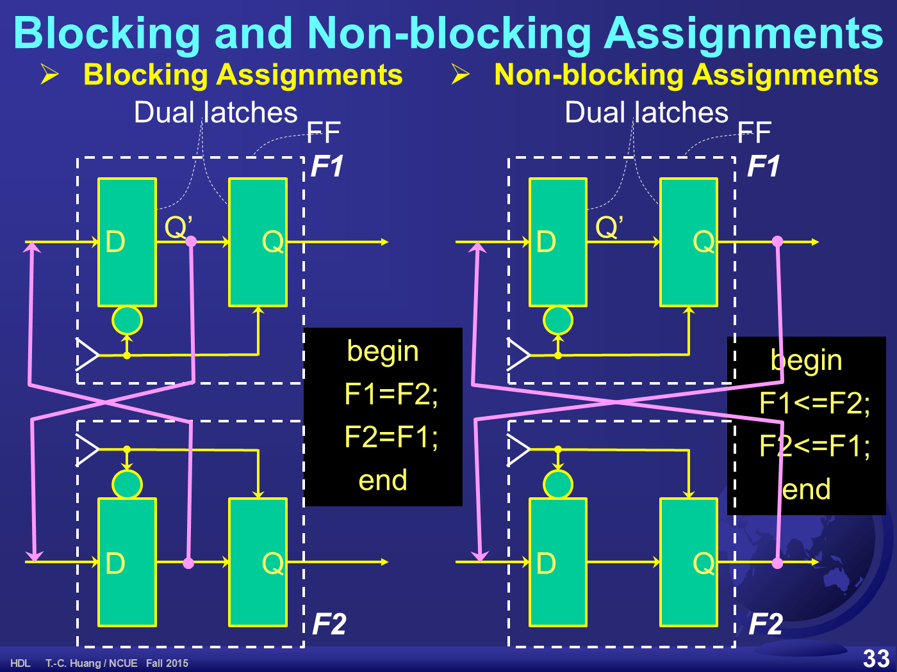
3.24 case / casex / casez
投影片 p.34
case (expression)
constant1: statement1;
:
constantj: statementj;
:
default: statementd;
endcasecasex(c)
4’b00xx: statement1;
:
4’b0xxx: statementj;
:
default: statementd;
endcasecasez(c)
8’b01z?11??: statement1;
:
8’b1100????: statementj;
:
default: statementd;
endcase投影片左下用一張范氏圖說明三者的涵蓋範圍：外圈白色標 z，內圈綠色標 0, 1，外圈左側另有 x 與一個帶箭頭的 ?。
| 敘述 | 把哪些值當成「不比對」 |
|---|---|
case | 完全精確比對，x 與 z 都必須一字不差 |
casez | z 與 ? 視為不比對 |
casex | z、? 以及 x 都視為不比對（範圍最寬） |
3.25 範例：正反器
投影片 p.35
module DFF(Clk, D, Q);
input Clk, D;
output Q;
reg Q;
always@(posedge Clk)
Q=D;
endmodule module DFF(Rst,Clk, D, Q);
input Rst, Clk, D;
output Q;
reg Q;
always@(posedge Clk or posedge Rst)
if(Rst) Q=1’b0;
else Q=D;
endmodule module DFF(Rst,Clk, D, Q);
input Rst, Clk, D;
output Q;
reg Q;
always@(posedge Clk)
if(Rst) Q=1’b0;
else Q=D;
endmodule 同步與非同步的唯一差別就在敏感度列表：非同步版把 posedge Rst 也放進 always@(...)，所以重置不必等時脈；同步版只看 posedge Clk，重置要等到下一個時脈邊緣才生效。
依 §3.21 的結論，這三段若要合成成正反器，業界慣例會把 Q=D 寫成 Q<=D。投影片此處用的是 =，照原文保留。
3.26 範例：計數器
投影片 p.36–37
module CNT(Clk, Q);
input Clk;
output [7:0] Q;
reg [7:0] Q;
always@(posedge Clk)
Q=Q+1;
endmodule module CNT(Rst,Clk, Q);
input Rst, Clk;
output [15:0] Q;
reg [15:0] Q;
always@(posedge Clk or posedge Rst)
if(Rst) Q=15’b0;
else Q=Q+1;
endmodule module CNT(Rst,Clk, Q);
input Rst, Clk;
output [31:0] Q;
reg [31:0] Q;
always@(posedge Clk)
if(Rst) Q=31’b0;
else Q=Q+1;
endmodule 原文的重置常數寫成 15’b0 與 31’b0，但暫存器寬度分別是 16 與 32 位元，位寬應為 16’b0 與 32’b0。照原文保留。
Module CNT(Clk, Q);
input Clk;
output [7:0] Q;
reg [7:0] Q;
always@(posedge Clk)
Q=Q-1;
endmodule 原文這一段的 Module 首字母大寫。照原樣保留。
module CNT(Load, Clk, D, Q);
input Load, Clk, D;
output [15:0] Q;
reg [15:0] Q;
always@(posedge Clk)
if(Load) Q=D;
else Q=Q+1;
endmodule module CNT(Rst,Clk, Q);
input Rst, Clk;
output [7:0] Q;
reg [7:0] Q;
always@(posedge Clk)
if(Rst) Q=7’b0;
else if(Q==99) Q=7’b0; //%100
else Q=Q+1;
endmodule 模數計數器的註解 //%100 說明它數 0 到 99 共 100 個狀態。不過 8 位元只能表示 0–255，而 7’b0 的位寬同樣與 [7:0] 不符（應為 8’b0）— 和 p.36 是同一類筆誤。
3.27 Lab03 七段顯示器與除頻器
投影片 p.38
標題：Lab03 7SEG Decoder & Freq Dividers
- Boolean Logic（布林邏輯）
- 7-Segment LED Decoder（七段顯示器解碼器）
- Frequency Dividers（除頻器）
- Running Lamps（跑馬燈）
- (Snake – a FPGA contest problem)（貪食蛇，FPGA 競賽題）
三道練習題：
- Problem 1. Review Karnaugh-Map（複習卡諾圖）
- Problem 2. Quine–McCluskey Algorithm
- Problem 3. Study Espresso Algorithm by exercise the Logic Friday.（用 Logic Friday 工具實作練習 Espresso 演算法）
注意這裡的拼法是正確的 Quine–McCluskey 與 Espresso，與 §3.8（p.11）投影片上的 McKlusky & Quintus、ESSPRESSO 不同。同一份教材內前後拼法不一致。
重點整理
- 常數格式是「位寬 + ' + 基底 + 數值」，如
8’haf；`反引號用於編譯指令，'單引號用於常數位寬，兩者不同鍵。 - 不可合成的東西有跡可循：依賴時間或次數的（
initial、repeat）、開關級、只在編譯／模擬用的運算子（===），以及程式庫裡沒有對應設計的（/、%）。 - 模組是樣板，實體才佔資源；埠對應有名稱對應與順序對應兩種寫法，埠一多就該用名稱對應。
- Verilog 有四種模型：行為 → RTL → 閘級 → 開關級。實務只常用前兩種，閘級通常是合成工具的輸出。
- 加入共識項可以消除突波：
(A&B)|(~A&C)加上B&C後，邏輯不變但毛刺消失。 - 行為就是對事件的反應；
always@(...)括號裡的就是敏感度列表，可用posedge、negedge與or組合。 - 電路時間與 CPU 時間是兩條獨立時間軸；事件驅動模擬靠「時間輪」這個佇列把事件按電路時間排程。
reg不等於硬體暫存器，它只是「可在程序式區塊中被指定的變數型別」；但行為區塊裡所有左值都必須宣告為reg。- 三種指定要分清楚：
assign的連續指定等於拉一條線；阻塞=會立刻生效、順序會影響結果、有相依性就不能合成；非阻塞<=先全部算完再一起寫入，與順序無關，全部用非阻塞就不會有相依性。 - 交換兩個值必須用非阻塞：
F1=F2; F2=F1;會讓兩者都變成舊的F2；F1<=F2; F2<=F1;才真的互換。 - casex 比 casez 寬鬆：
casez只把z／?當不比對，casex連x也不比對。 - 同步與非同步重置的差別只在敏感度列表：非同步把
posedge Rst也列進去。
關鍵術語
- 模組 module
- 以樣板形式定義的設計單位。投影片 p.8
- 實體 instance
- 在父模組中被複製出來、真正佔用硬體資源的元素。投影片 p.8
- 埠 port / pin
- 模組對外的介面，是模組內部的觀點。投影片 p.9
- 接線 net / wire
- 連接各實體的訊號線，是模組外部的觀點；名稱可與埠不同。投影片 p.9
- 敏感度列表 sensitivity list
always@(...)括號內列出的事件集合。投影片 p.21- 時間輪 time wheel
- 事件驅動模擬器用來依電路時間排程事件的內部佇列結構。投影片 p.23
- 左值 L-value
- 位於指定運算左邊、被寫入的變數。投影片 p.24
- 連續指定 continuous assignment
assign的指定；合成後就是一條從右式拉到左值的線。投影片 p.29- 阻塞指定 blocking assignment
- 程序式區塊中的
=；立刻生效，後續敘述會看到新值。投影片 p.29 - 非阻塞指定 non-blocking assignment
<=；先算完所有右式再一起寫入，與書寫順序無關。投影片 p.29- 突波 hazard / glitch
- 組合邏輯因路徑延遲不同而產生的短暫錯誤脈衝。投影片 p.13
- 一熱碼 1-hot code
- 同一時間只有一個位元為 1 的編碼方式，解碼器的輸出形式。投影片 p.15
完整詞條見全站術語表。